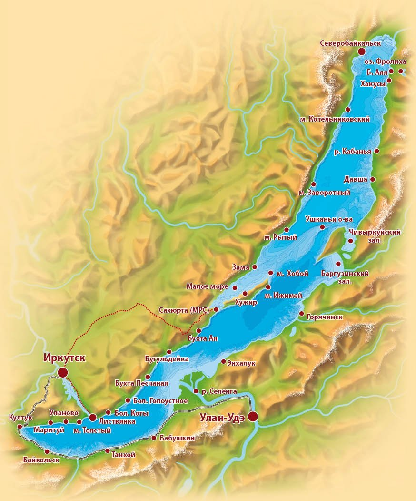
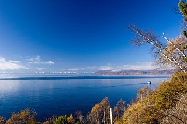
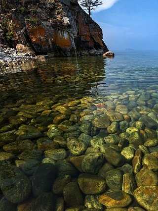
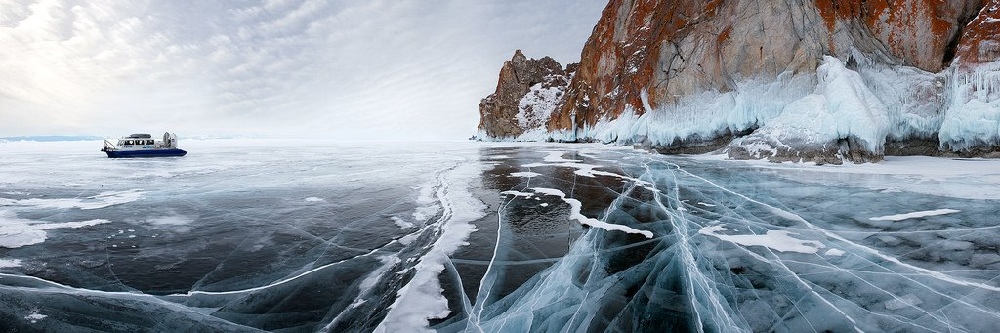
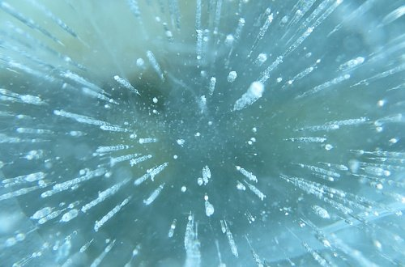
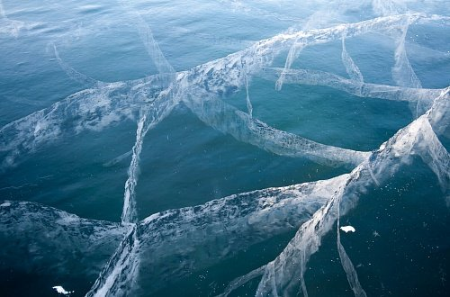
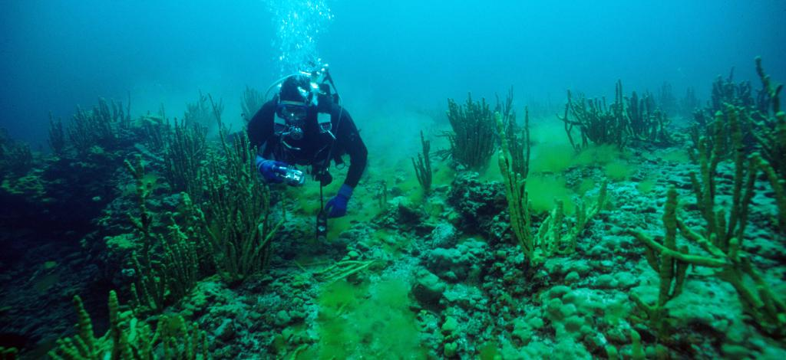

Озеро Байкал – какое оно?
По очертаниям Байкал похож на узкий полумесяц, настолько легко запоминающийся, что его без труда находят на карте России даже те, кто не особенно силен в географии. Простершийся с юго-запада на северо-восток на целых 636 километров, Байкал словно протискивается между горными массивами, а его водная гладь находится на высоте более 450 метров над уровнем моря, что дает все основания считать его горным озером. С запада к нему примыкают Байкальский и Приморский хребты, с востока и юго-востока – массивы Улан-Бургасы, Хамар-Дабан и Баргузинский. И весь этот природный ландшафт настолько гармоничен, что одно без другого трудно представить.
Еще Олег Кириллович Гусев (1930-2012), кандидат биологических наук, профессиональный охотовед, главный редактор старейшего в России журнала «Охота и охотничье хозяйство» и автор нескольких книг о проблемах сохранения уникальной природы этого озера, писал: «Байкал дарит нам великую радость и огромное наслаждение». И добавлял: «Он поражает монументальностью стиля и тем прекрасным, вечным и могучим, что заложено в самой его природе», подчеркивая, что чем больше с ним сближаешься, тем заманчивее он становится, и тем яснее понимаешь, что Байкал уникален и чарующе неповторим. В правдивости этих слов сможет убедиться каждый, кто хотя бы раз побывает здесь.
Глубина озера
Глубина озера поистине впечатляюща – 1637 метров. По этому показателю Байкал превосходит такие крупнейшие водоемы, как Танганьика (1470 м), Каспийское море (1025 м), Сан-Мартин (836 м), Ньяса (706 м), Иссык-Куль (702 м) и Большое Невольничье озеро (614 м). Остальные глубочайшие озера мира, всего их двадцать два, имеют глубину менее 600 метров. А климатические условия на Байкале, что называется, под стать его уникальным особенностям: здесь то нещадно палит солнце и дуют холодные ветры, то свирепствуют штормы и устанавливается тишайшая погода, благоприятствующая пляжному отдыху.
Особенности и загадки Байкала
Длина береговой линии сибирского «полумесяца» составляет 2100 км, на нем расположено 27 островов, самый большой из которых – Ольхон. Озеро находится в своеобразной котловине, которую, как было сказано выше, со всех сторон окружают горные хребты и сопки. Это дает основание предполагать, что береговая линия водоема на всем протяжении одинаковая. На самом же деле скалистым и обрывистым является только западное побережье Байкала. Рельеф же восточного более пологий: в некоторых местах горные вершины находятся на отдалении от берега на 10 и больше километров.
Вода озера Байкал
23 615, 39 км³ – такой фантастической цифрой измеряются запасы байкальской воды. По этому показателю озеро уступает лишь Каспийскому морю. Учитывая же, что в последнем она соленая, именно Байкал занимает первую строчку мирового рейтинга по запасам пресной, то есть пригодной для питья воды. К тому же она отличается чрезвычайной прозрачностью, и всё благодаря очень небольшому количеству взвешенных и растворенных минеральных веществ, не говоря уже об органических примесях – их тут вообще ничтожно мало. На глубине до 35-40 метров можно даже различить отдельные камни, особенно весной, когда вода становится синего цвета. Отличается она и огромными запасами кислорода. Не зря Байкал – за совокупность столь уникальных свойств и качеств – называют национальным достоянием России.
Вода в Байкале очень чистая. Раньше ее можно было пить прямо из озера и даже не кипятить. Но сейчас к Байкалу устремились толпы туристов, которые все-таки загрязняют эту местность, поэтому теперь, прежде чем выпить байкальской воды, следует спросить у местных жителей, в каком месте это можно сделать.
Лед Байкала
Время ледостава на озере длится в среднем с начала января по начало мая. В этот период оно замерзает практически полностью. Исключение составляет лишь небольшой 15-20-километровый участок, расположенный в истоке Ангары. На исходе зимы толщина льда может достигать 1 метра, а в заливах и того больше – полтора-два метра. При сильных морозах на льду образуются огромные трещины, которые тут прозвали «становыми щелями». Они настолько внушительны, что в длину могут достигать от 10 до 30 км. Ширина, правда, мала: всего 2-3 м. Такие «щели» буквально разрывают ледяное покрывало на отдельные поля. Если бы не трещины, образование которых сопровождается громким, словно пушечный выстрел, звуком, то озерная рыба массово бы погибала от недостатка кислорода.
Лед Байкала имеет и ряд других особенностей, присущих только ему, и поистине загадочных, которые ученые так и не смогли объяснить. Еще в середине прошлого века специалистами местной лимнологической станции обнаружены так называемые «сопки» – полые ледяные холмы в форме конуса, достигающие высоты 5-6 метров. Будучи «открытыми» в сторону, противоположную берегу, они даже чем-то напоминают шатры. Иногда встречаются «сопки-одиночки», то есть располагающиеся отдельно друг от друга. В ряде случаев они группируются, образуя «горные хребты» в миниатюре.
 Дно Байкала
Нельзя не сказать и о дне удивительного водоема. Оно также отличается от других, и прежде всего тем, что имеет весьма выраженную рельефность – тут встречаются даже подводные горные массивы. Три основные котловины озера – северная, южная и средняя, разделенные Академическим и Селенгинским хребтами – отличаются выраженным ложе. Первый хребет (его максимальная высота над дном составляет 1848 метров), особенно выразителен: он протянулся на целых 100 км от острова Ольхон к Ушканьим островам.
